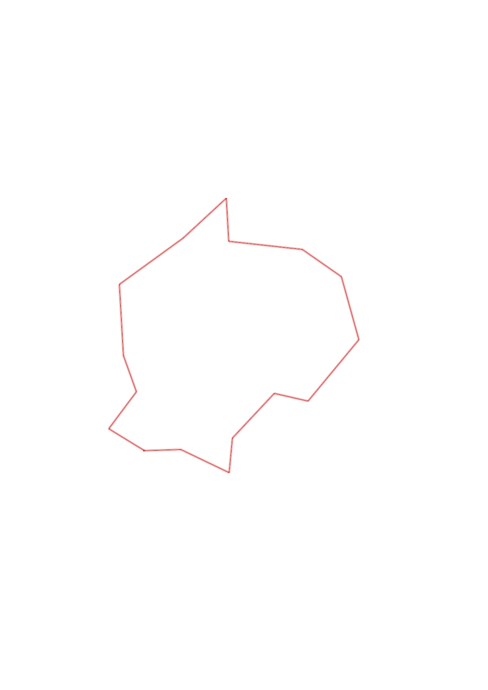
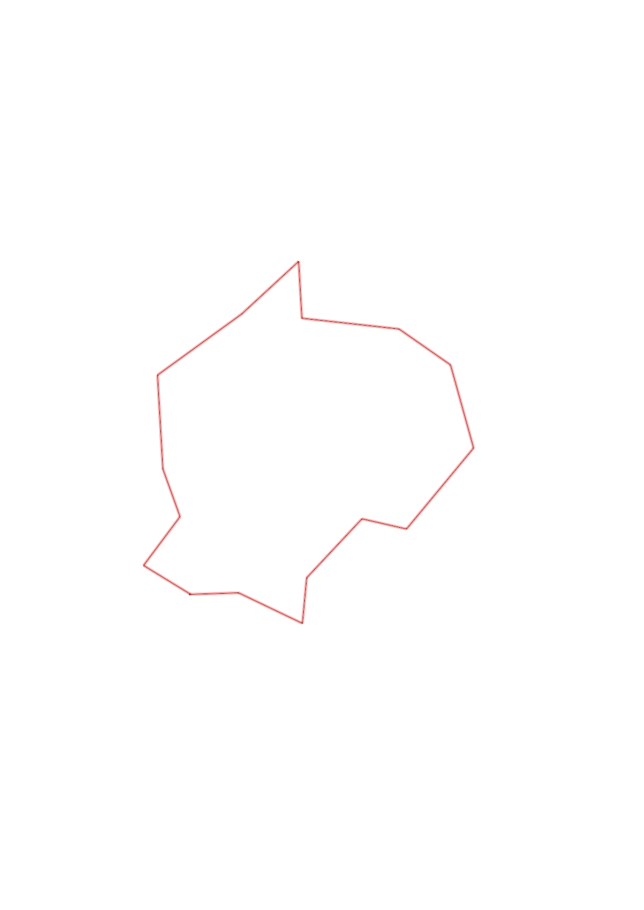

| Control |
Points |
Time Punched |
Distance |
Your Time |
Pace |
Place |
Fastest Time |
Median Time |
% Behind Fastest |
| 63 |
60 |
|
0.24 |
0:01:53 |
07:50 |
4 / 13 |
0:01:34 |
0:02:05 |
20% |
| 54 |
50 |
|
0.35 |
0:05:57 |
17:00 |
8 / 9 |
0:03:08 |
0:04:37 |
89% |
| 80 |
80 |
|
0.22 |
0:05:13 |
23:42 |
8 / 11 |
0:02:23 |
0:03:30 |
118% |
| 48 |
40 |
|
0.4 |
0:04:00 |
10:00 |
8 / 10 |
0:02:29 |
0:03:23 |
61% |
| 60 |
60 |
|
0.22 |
0:02:43 |
12:20 |
5 / 8 |
0:02:05 |
0:02:34 |
30% |
| 81 |
80 |
|
0.52 |
0:04:12 |
08:04 |
4 / 11 |
0:03:21 |
0:04:40 |
25% |
| 46 |
40 |
|
0.42 |
0:04:40 |
11:06 |
2 / 7 |
0:03:46 |
0:04:48 |
23% |
| 61 |
60 |
|
0.31 |
0:04:05 |
13:10 |
3 / 6 |
0:02:54 |
0:04:08 |
40% |
| 34 |
30 |
|
0.48 |
0:03:42 |
07:42 |
3 / 6 |
0:02:42 |
0:03:44 |
37% |
| 39 |
30 |
|
0.28 |
0:03:02 |
10:49 |
5 / 7 |
0:01:51 |
0:02:56 |
63% |
| 65 |
60 |
|
0.38 |
0:03:05 |
08:06 |
2 / 4 |
0:03:02 |
0:03:17 |
1% |
| 53 |
50 |
|
0.51 |
0:03:49 |
07:29 |
2 / 4 |
0:03:48 |
0:04:15 |
0% |
| 58 |
50 |
|
0.46 |
0:03:48 |
08:15 |
2 / 3 |
0:03:20 |
0:03:48 |
14% |
| 51 |
50 |
|
0.25 |
0:02:30 |
10:00 |
4 / 9 |
0:01:43 |
0:02:53 |
45% |
| 35 |
30 |
|
0.3 |
0:02:53 |
09:36 |
5 / 8 |
0:02:08 |
0:02:40 |
35% |
| Finish |
0 |
|
0.27 |
0:02:26 |
09:00 |
10 / 10 |
0:01:23 |
0:01:33 |
75% |
Total Distance Covered: 5.61km
Points Scored: 770
Late Penalty: 0
Final Score: 770
Total Time: 0hours 57minutes 58seconds
Efficiency: 137.25 points/km
 
